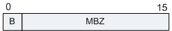

DHCP报文是承载于UDP上的高层协议报文，采用67（DHCP服务器）和68（DHCP客户端）两个端口号。
DHCP的报文格式如下图所示。
DHCP报文中各字段的含义：
| 字段 | 长度 | 含义 |
|---|---|---|
| OP | 1字节 | 表示报文的类型：
|
| htype | 1字节 | 表示硬件地址的类型。对于以太网，该类型的值为“1”。 |
| hlen | 1字节 | 表示硬件地址的长度，单位是字节。对于以太网，该值为6。 |
| Hops | 1字节 | 跳数。客户端设置为0，也能被一个代理服务器设置。 |
| xid | 4字节 | 事务ID，由客户端选择的一个随机数，被服务器和客户端用来在它们之间交流请求和响应，客户端用它对请求和应答进行匹配。该ID由客户端设置并由服务器返回，为32位整数。 |
| secs | 2字节 | 由客户端填充，表示从客户端开始获得IP地址或IP地址续借后所使用了的秒数。 |
| flags | 2字节 | 此字段在BOOTP中保留未用，在DHCP中表示标志字段。 图2 Flags字段格式
 只有标志字段的最高位才有意义，其余的位均被置为0。 最左边的字段被解释为广播响应标志位，内容如下所示：
|
| ciaddr | 4字节 | 客户端的IP地址。只有客户端是Bound、Renew、Rebinding状态，并且能响应ARP请求时，才能被填充。 |
| yiaddr | 4字节 | "你自己的"或客户端的IP地址。 |
| siaddr | 4字节 | 表明DHCP协议流程的下一个阶段要使用的服务器的IP地址。 |
| giaddr | 4字节 | 该字段表示第一个DHCP中继的IP地址（注意：不是地址池中定义的网关）。当客户端发出DHCP请求时，如果服务器和客户端不在同一个网络中，那么第一个DHCP中继在转发这个DHCP请求报文时会把自己的IP地址填入此字段。服务器会根据此字段来判断出网段地址，从而选择为用户分配地址的地址池。服务器还会根据此地址将响应报文发送给此DHCP中继，再由DHCP中继将此报文转发给客户端。 若在到达DHCP服务器前经过了不止一个DHCP中继，那么第一个DHCP中继后的中继不会改变此字段，只是把Hops的数目加1。 |
| chaddr | 16字节 | 该字段表示客户端的MAC地址，此字段与前面的“Hardware Type”和“Hardware Length”保持一致。当客户端发出DHCP请求时，将自己的硬件地址填入此字段。对于以太网，当“Hardware Type”和“Hardware Length”分别为“1”和“6”时，此字段必须填入6字节的以太网MAC地址。 |
| sname | 64字节 | 该字段表示客户端获取配置信息的服务器名字。此字段由DHCP Server填写，是可选的。如果填写，必须是一个以0结尾的字符串。 |
| file | 128字节 | 该字段表示客户端的启动配置文件名。此字段由DHCP Server填写，是可选的，如果填写，必须是一个以0结尾的字符串。 |
| options | 可变 | 该字段表示DHCP的选项字段，至少为312字节，格式为"代码+长度+数据"。DHCP通过此字段包含了服务器分配给终端的配置信息，如网关IP地址，DNS服务器的IP地址，客户端可以使用IP地址的有效租期等信息。 |
| Option id | 长度(字节） | 描述 |
|---|---|---|
| 1 | 4 | Subnet Mask |
| 3 | n*4 | Router(网关） |
| 6 | n*4 | DNS Server |
| 7 | n*4 | Log Server |
| 26 | 2 | Interface MTU |
| 33 | n*8 | Static route |
| 35 | 4 | ARP cache timeout |
| 42 | n*4 | NTP servers |
| 51 | 4 | IP address lease time |
| 53 | 1 | Message type：
|
| 54 | 4 | DHCP Server Identifier |
| 60 | n | 华为自定义：可配置该终端设备在发起DHCP请求时，通过Option 60携带域信息。收到DHCP报文时，可根据Option 60中携带的域信息来分配IP地址。 |
| 82 | n | 华为自定义：作为DHCP Relay，在中继用户DHCP报文时，可在Option 82中填写用户的物理位置信息，通知DHCP服务器按物理位置信息对为用户分配IP地址。 |
| 标准 | 描述 |
|---|---|
| RFC 951 | Bootstrap Protocol (BOOTP) |
| RFC 1542 | Clarifications and Extensions for the Bootstrap Protocol |
| RFC 2131 | Dynamic Host Configuration Protocol |
| RFC 2132 | DHCP Options and BOOTP Vendor Extensions |